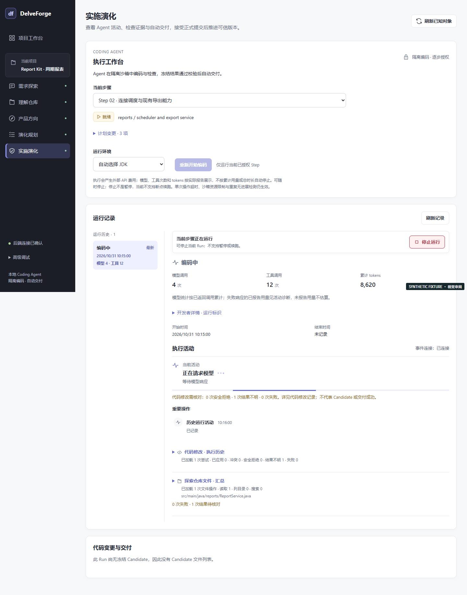

DelveForge · Editorial Engineering Workbench
2026-10-31 · 本地视觉改版候选 · 最终接受由用户独立决定
所有应用截图均为真实 Vue 组件在 Chrome 中的夹具渲染。姓名、路径、项目和 Agent 数据均为合成内容。After 使用生产构建；Before 使用起始版本的开发构建。它们不证明真实后端或付费模型执行成功。基线夹具中部分导航 Step 统计后来作了数据一致性修正，相关删除限制提示差异不属于产品行为变更。
主要前后对比
执行工作台

Before · 1440 × 900 viewport · 完整截图可点开 After · 1440 × 900 viewport
After · 1440 × 900 viewport所有页面
完整方法、工具版本、回归范围和局限见同目录上级 FRONTEND_VISUAL_VALIDATION.md。